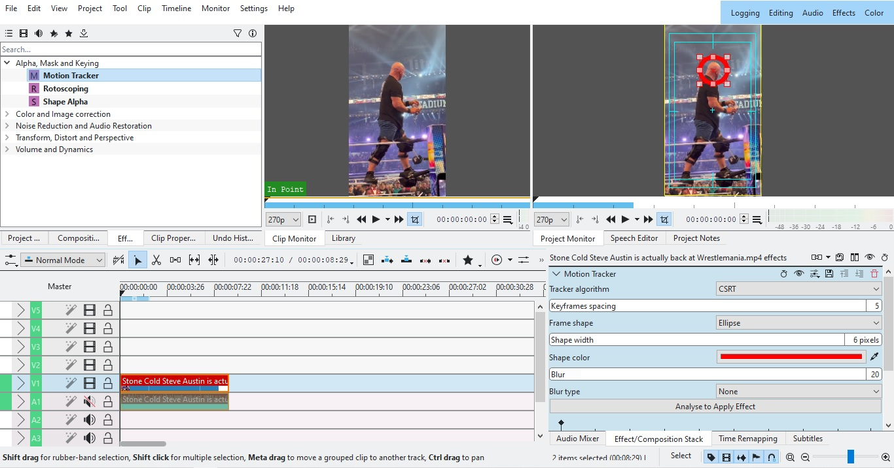
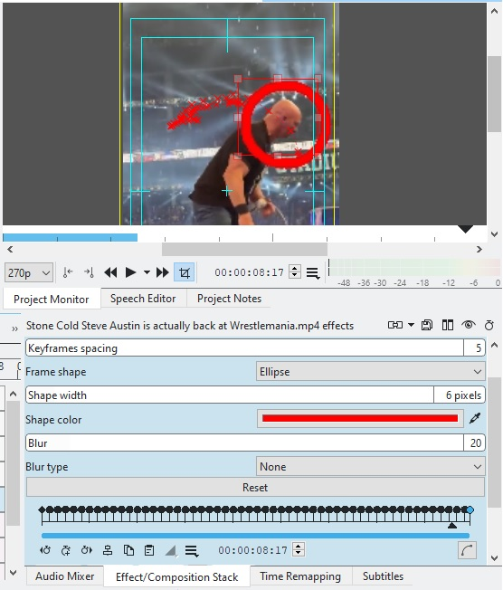
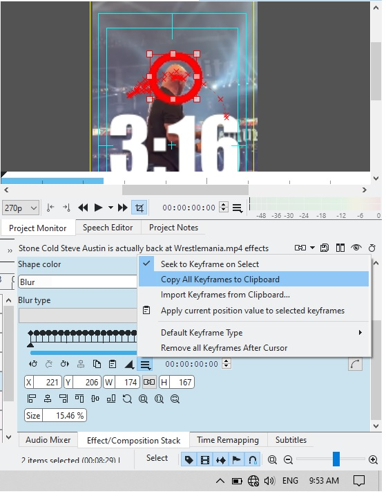
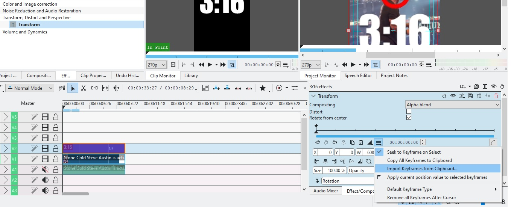
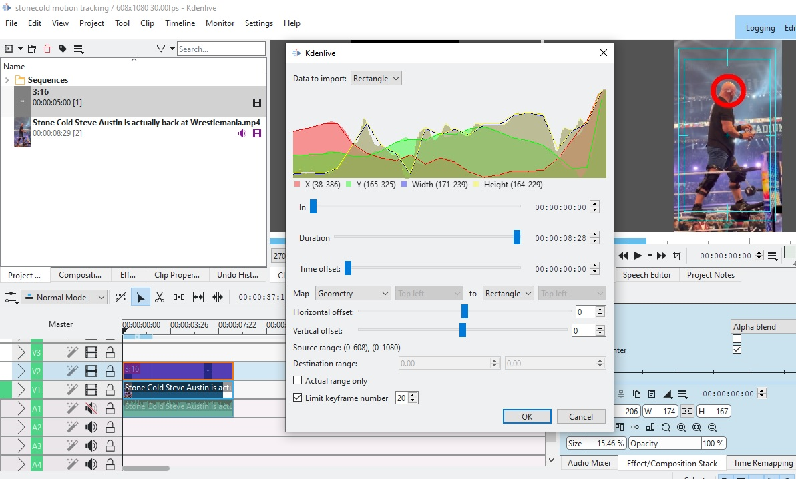

Basic Motion Tracking
- Add the clip in the timeline.
- Search Motion Tracker effect and drop it on the clip in the timeline.
- In effects panel, you should see the Motion Tracker details.
- 
- Drag the red selection around the object you want to track.
- Click Analyze to Apply Effect button. It should take some time to process.
- Once analysis is done, you should see the path of the object in the video like this,
- 
- Add a new Title Clip above the video clip.
-
Select the video clip in the timeline, and open effects panel. In motion tracking effects option, click Copy all keyframes to clipboard
- 
- Select the Title clip. Apply Transform Effect to the title clip.
- In Transform Effects of Title Clip, select Import Keyframes from clipboard
- 
- 
- Play the Project. You should see title moving along the tracked object.
- You can disable the red tracking marks in Motion tracker effects panel by setting Shape Width to 0.